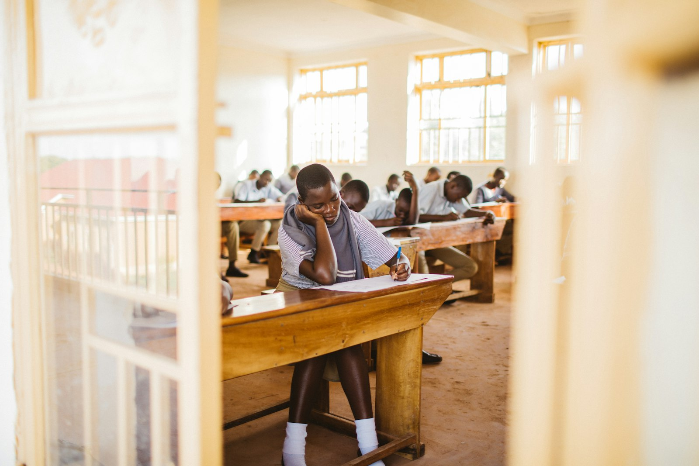
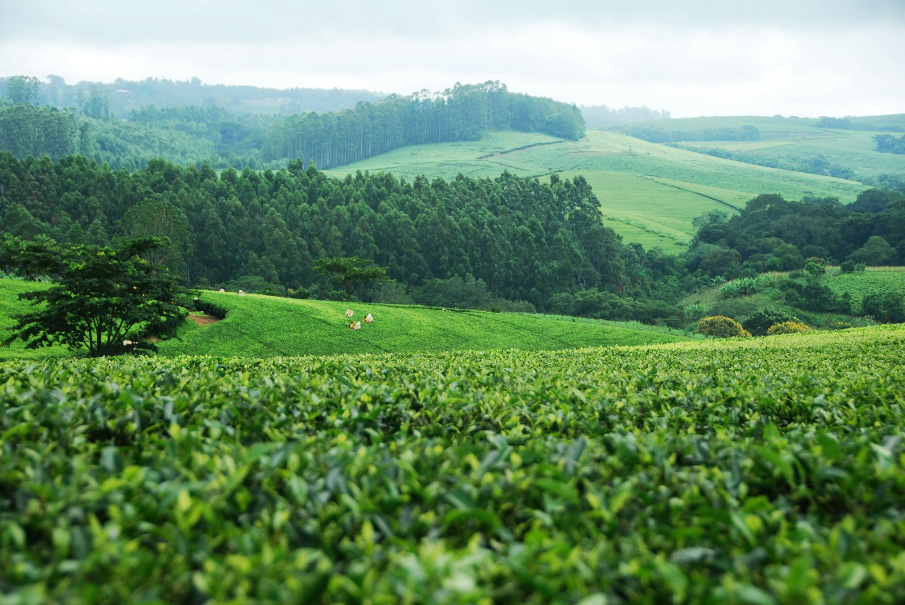

SYNESS Invest connects capital, expertise and transformative opportunities across Africa and international markets.
Identification, structuring and development of investment opportunities and sector-specific platforms.
Creation, acquisition, development and transformation of companies or assets capable of becoming regional platforms.
Connecting entrepreneurs, investors, family offices, institutions, companies and international partners.
Sector-specific platforms designed to become regional and international references.
An ecosystem from school to university and career — a bilingual pan-African education platform.
Agroecology, agricultural value chains, environment and territories.
Health-tech, digital transformation and digital infrastructure.
Resorts, territorial development, hospitality and destination-linked real estate.
An institutional platform connecting students, families, schools and corporate partners across Africa and Europe — building pathways from school to university, professional experience and career.

Identify opportunities and assets with real long-term potential.
Build the model, governance, partnerships and transaction structure.
Connect opportunities with the appropriate forms of capital.
Support development and hands-on execution.
Grow regionally and internationally, building durable platforms.
How SYNESS Invest connects London capital with African opportunities in education, sustainable economies and digital infrastructure.
Read the essay →Partner with SYNESS to build the next generation of institutional platforms.
Four verticals. One institutional discipline. From origination to regional expansion.
An institutional bilingual education platform serving families, schools and corporate partners across Africa and Europe. The platform builds continuity from school to university, professional experience and career — with a long-term perspective on quality, governance and access.
Progressive acquisition and development of a school network anchored in Senegal, with expansion strategy across multiple African markets and partnerships with international institutions.
Investment platforms in agroecology, agricultural value chains, environment and territorial development. SYNESS structures the opportunity and the strategy — operating brands run their own craft.
Projects rooted in the Dandou ecosystem and adjacent value chains are presented here at the strategic and capital level.

Platforms rooted in territories — the Dandou ecosystem and adjacent value chains.
Health-tech, digital transformation and digital infrastructure — structuring opportunities in a sector where institutional capital, technical expertise and cross-border partnerships converge.
Where institutional capital and technical expertise converge.
Resorts, territorial development, hospitality operations and destination-linked real estate — carried or structured by SYNESS.
Hospitality operations and destination-linked real estate, structured for the long term.
Each vertical is designed to become a regional reference — structured with long-term capital and partners.
Building pathways from school to university, professional experience and beyond.
A network of premium bilingual schools connecting students, families and partners across Africa and Europe.
Personal orientation, school placement, university admissions and career development — from Africa, Europe and beyond.
Partner with an institutional education network operating premium bilingual schools across multiple African markets.
Strategic partnerships for corporations, foundations, universities and institutions committed to education across Africa.
Anchored in Senegal, with a progressive expansion strategy across multiple African markets — combining school acquisitions, partnerships and long-term institutional development.
From Première / Year 12 to Bachelor, Master and PhD — UK, US, Canada, France, Switzerland, Europe and the UAE.
Partner with SYNESS Education to shape the next generation of institutional education platforms.
For companies, institutions and partners who need more than a transaction.
Structuring investment opportunities, vehicles and transactions — building the governance, partnerships and financial architecture required to move from concept to capital.
Supporting organisations that want to expand internationally — market intelligence, positioning, partnerships and access strategy across Africa, Europe and the GCC.
Designing and executing strategic partnerships that unlock market entry, joint ventures or long-term alliances between international and local players.
Institutional advisory for governments, family offices, foundations and corporates on cross-border operations, structuring and long-term alignment.
Let's discuss how SYNESS can support your next strategic milestone.
Anchored in London. Rooted in Africa. Connected to the GCC and international markets.
The London anchor connects SYNESS to international capital, institutional partners and European educational networks.
Where platforms are built — with a network of local partners across Senegal, Mauritania and neighbouring markets.
A strategic region for capital and long-term partnerships — with tailored structures including Shariah-compliant options.
Selected international relationships that support cross-border operations and strategic co-investments.
Anchored in Senegal and Mauritania, with a network of local partners across the region.
The SYNESS network operates as one — from London to Dakar, from Riyadh to Paris.
This area is reserved for qualified investors, family offices and institutional partners.
Submit the form above with your name, organisation and investor profile. We review every request individually.
Within 48 hours, our team contacts you to discuss your investment focus and answer initial questions.
Depending on your profile and interests, we send pitch decks, financial summaries and governance documents under NDA.
After initial contact and depending on investor type and investment focus, we can provide:
Long-term capital deployment, legacy building and strategic allocation to African growth markets.
Impact-driven investment with measurable social and economic outcomes across sectors.
Co-investment opportunities, sector-specific platforms and diversified African exposure.
Strategic partnerships, market entry and operational integration across West Africa and the GCC.
For institutional enquiries, co-investment opportunities or to request documentation, email our Investor Relations team directly.
contact@synessinvest.com →SYNESS Invest Ltd is a London-based investment and strategic development platform.
Europe, Africa and international markets — with the discipline of institutional London capital and the intelligence of local partnerships.
Education, sustainable economies, technology and strategic sectors — chosen for depth, not spread.
Building with entrepreneurs, institutions, investors and local partners — never alone.
Not just financing a transaction — building durable platforms that can grow across cycles.
Speak with the SYNESS team about a project, a partnership or a strategic opportunity.
SYNESS Invest Ltd
London · United Kingdom
contact@synessinvest.com
By request only
Essays and notes on capital, strategy and the building of platforms across markets.
How SYNESS Invest connects London capital with African opportunities in education, sustainable economies and digital infrastructure.
For two decades, international capital has arrived in Africa more often as a succession of transactions than as institutions. Opportunities are identified, financed and dispersed — then the next deal begins. The compounding effect is lost, and with it the local knowledge, governance and talent that make long-term returns durable.
SYNESS was built on a different conviction: the structures that last are platforms. Sector-specific institutions, created with local partners, governed like institutions and financed by capital that is comfortable with a decade — not a quarter. A platform concentrates effort, reputation and relationships in one place, and grows across cycles rather than surviving them one trade at a time.
London provides the anchor: proximity to institutional capital, European educational networks and a regulatory tradition that investors recognise. West Africa provides the ground: a fast-growing, largely bilingual region where demand for quality services — education above all — still runs far ahead of supply. Between the two sits a third pillar, the GCC, where family offices and institutions are increasingly looking to deploy strategic, long-dated capital, including through Shariah-compliant structures.
Every platform follows the same discipline:
Education is the anchor platform. SYNESS Education Partners is building a bilingual, pan-African network anchored in Senegal — from school to university, professional experience and career — because no other sector compounds quite like it: better schools today fund better institutions tomorrow, and the network is the stewardship of that continuity.
Sustainable and regenerative economies follow the same logic, applied to land, value chains and territories. Health-tech and digital infrastructure carry the region's next decade of connectivity. In each case, SYNESS structures the opportunity and the capital — operating brands run their craft.
None of this works without governance. An investment committee sits above every structure, conflicts are declared, valuations are independent, and partner alignment is written into the architecture rather than assumed. Quietly, and over the long term, the platforms are expected to speak for themselves.
The next decade of cross-border capital will be defined less by the volume that moves — and more by the institutions that are built with it.
A senior team organised around platforms — and an investment process built for the long term.
SYNESS operates as an investment and strategic development platform. Its committee combines institutional, sector and geographic expertise across London, West Africa and the GCC.
Institutional oversight and governance of the committee and its decisions.
Origination, structuring and capital allocation across platforms.
Development of SYNESS Education Partners across African markets.
Agroecology, value chains and territorial platforms.
Health-tech ventures and digital infrastructure.
Relationships with family offices and institutions in Europe and the GCC.
Each platform is reviewed against a consistent discipline — origination, structuring, governance, capital and execution. Conflicts are declared, valuations independent, and partner alignment is written into the structure from the outset.
An international education concierge for families who want more than an application.
Choosing a university is not simply choosing a name. It is choosing an academic direction, a city, a network, a future profession, a cultural environment and, often, a new country. SYNESS Education Partners works with students and families as a strategic education partner. We begin with the whole profile — academic record, personality, ambitions, languages, finances, mobility, immigration history and long-term career objectives — before building a route.
From Première / Year 12 to Bachelor, Master, PhD and mature-study routes.
Families seeking highly selective, international or specialist education; students in bilingual, international, British, French, American or IB systems; internationally mobile families; future undergraduates; postgraduate candidates; mature students; and students whose profile requires a carefully designed alternative route.
Every journey begins with a confidential Student & Family Profile: education history, grades, English and other languages, interests, career vision, preferred destinations, previous applications, visa history, budget, scholarship needs, family decision-making and readiness to act.
Dream and highly competitive institutions. We identify the academic, language and profile-building work needed to make the strongest credible application.
Strong institutions where the student's academic profile, ambitions, budget, timing and mobility align realistically.
Credible, quality routes with more accessible entry requirements, protecting the student from being left without a viable progression option.
Not every student should enter university immediately. For some, the strongest route is one or two years of preparation — matched to the destination and the degree.
For younger international students, we may assess British sixth-form, boarding or pathway environments where academic preparation and English can develop together. For mature students, a Foundation or other access route may be more appropriate than returning to a two-year school programme. Any provider, progression route and visa eligibility is assessed individually; inclusion in a SYNESS strategy does not imply a guaranteed progression or formal partnership.
Academic positioning, subject choices, English, extracurricular profile, university research and family budget.
Shortlist, UCAS or direct applications, essays and personal statements, references, tests, interviews, scholarships, offers and decision support.
Documentation, visa-process coordination, accommodation strategy, travel readiness, enrolment and transition planning.
Where contracted, SYNESS can remain a family point of reference for academic orientation, progression decisions and future postgraduate planning.
London and the United Kingdom, Europe, North America and the Gulf — assessed one student at a time.
Beyond these, we consider selected international destinations case by case. We assess the route, not just the ranking: entry qualification, subject prerequisites, language, application platform, timing, tuition, scholarships, visa requirements, work opportunities, city fit and long-term progression.
For UK undergraduate study, many applications are made through UCAS. SYNESS will determine whether UCAS, direct application, Clearing or another route is appropriate — and students should not wait for the published deadline to begin preparing.
| Date | Milestone — 2027 entry |
|---|---|
| 12 May 2026 | UCAS opens for 2027 entry — students can register and start their application in the UCAS Hub. |
| 1 September 2026 | Completed applications can begin to be submitted to UCAS. |
| 15 October 2026 (18:00 UK) | Equal-consideration deadline — Universities of Oxford and Cambridge, and most courses in medicine, dentistry and veterinary medicine/science. |
| 13 January 2027 (18:00 UK) | Equal-consideration deadline for the majority of other undergraduate courses. |
| 25 February 2027 | Extra (later stages) opens for applicants holding no offers. |
Source: UCAS — dates and deadlines for university applications (ucas.com), retrieved September 2026. Dates can vary by course; always confirm on ucas.com.
SYNESS intends to build a giving-back model in which the strength of its private-client ecosystem helps widen access for exceptional students whose financial circumstances would otherwise limit opportunity — an annual or periodic sponsored-student initiative, subject to transparent selection criteria and available funding.
*SYNESS provides education strategy, application coordination and documentary support. Admission, scholarships, immigration sponsorship/CAS and visas remain decisions of the relevant institutions and authorities. Named pathways and providers are examples unless a formal partnership is expressly stated.
Bilingual onboarding, pathway reports, applications, offers, visa checklist, appointments and family communication — one discreet environment.
Fifteen short sections, in English or French. Everything you share is treated as confidential and used only to design the student's pathway strategy. Only the name and contact email are mandatory — answer what you can.
Your confidential Student & Family Profile has been sent. The SYNESS education team will review it and contact you to book the diagnostic consultation — the first step toward your Aspirational · Strategic · Secure pathway report.
Illustrative preview of the family dashboard. Live access is activated after onboarding and connection to the SYNESS secure case-management system.
Student snapshot: identity, curriculum, academic profile, languages, career vision, destinations and family decision-making — as captured in your profile and kept current with your adviser.
After the diagnostic consultation, your adviser publishes your three routes — Aspirational · Strategic · Secure — with recommended institutions, entry requirements, gaps to close and the rationale for each.
Submission order, deadlines, internal SYNESS target dates and live status for UCAS and direct applications — coordinated so nothing is missed.
Secure upload for transcripts, school reports, references, translations and identity documents, with a checklist of what is missing.
English and admissions-test planning: diagnostic level, target score, preparation timetable, approved test route and retake strategy.
Offers received, compared strategically against your pathways, budget and long-term goals — with decision support before deadlines.
Document coordination for the visa process — factual checklists and deadlines, prepared with your adviser. Immigration decisions remain with the relevant authorities.
Accommodation strategy and transition planning for your destination — options, deadlines and arrival logistics.
Diagnostic consultation, strategy sessions, pre-departure briefing and check-ins — booked and tracked here.
One view for parents and guardians: progress, payment milestones, upcoming decisions, communication with the SYNESS team and urgent contacts.
SYNESS provides education strategy, application coordination and documentary support. Admission, scholarships, immigration sponsorship/CAS and visas remain decisions of the relevant institutions and authorities.
How SYNESS Invest Ltd handles information submitted through this website.
SYNESS Invest Ltd is a London-based investment and strategic development platform. For any privacy question, contact contact@synessinvest.com.
Through the contact and investor forms we process only the details you choose to send: name, email address, organisation and the content of your message.
Form submissions are delivered by FormSubmit.co as a technical relay to the SYNESS mailbox. The site uses Cloudflare for delivery and protection, and Google Fonts for typography. Each service operates under its own published privacy policy.
The Student & Family Profile collects information about the student and the family — identity and contact details, education history, language tests, study goals, previous applications, immigration and visa history, financial situation and personal profile — solely to assess the student's profile, prepare pathway recommendations and arrange the diagnostic consultation. It is submitted only after explicit consent, given on the portal's consent page.
Where the student is under 18, the profile must be completed by, or with, a parent or legal guardian, who consents on the student's behalf. Sensitive information is accessed only by the SYNESS education team handling the file. No documents or passport numbers are collected through the website; they are requested later through a secure channel. Consent can be withdrawn at any time by writing to contact@synessinvest.com.
We keep correspondence only as long as necessary. You may request access, correction or deletion of your data, or object to its processing, by writing to contact@synessinvest.com.
This website presents SYNESS Invest Ltd and its platforms in general terms. It does not constitute an offer, solicitation or recommendation to invest, and it is not investment, legal or tax advice.
Any investment in the platforms or opportunities described may be illiquid, long-term and high risk. Capital may be lost. Decisions should be based on the documentation provided to qualified investors, never on this site alone.
Certain investor sections are reserved for qualified investors and institutional partners, and are made available on request after verification.
All content — text, branding and imagery — is the property of SYNESS Invest Ltd or its licensors and may not be reused without permission.
We take reasonable care with the accuracy of this website but give no warranty as to its completeness. To the extent permitted by law, SYNESS is not liable for any loss arising from its use.
These terms are governed by the laws of England and Wales.
SYNESS Invest Ltd is registered in England and Wales. The company is not authorised or regulated by the Financial Conduct Authority (FCA) or any other financial regulatory body. The activities described on this website do not constitute regulated financial services under the Financial Services and Markets Act 2000 (as amended).
The investment opportunities described on this website are not, and do not constitute, an offer or solicitation to sell or buy securities in any jurisdiction. Any such offer would be made only pursuant to definitive transaction documentation and only to qualified investors in jurisdictions where such offers may be lawfully made. This website does not constitute a prospectus or offering document under applicable securities laws.
This website is not directed at, and does not constitute an offer or solicitation to any person in, any jurisdiction in which such offer or solicitation would be unlawful. Persons accessing this website are required to inform themselves about and comply with any legal or regulatory restrictions applicable to their own circumstances.
Past performance is not a reliable indicator of future results. Any historical data, financial projections or case studies presented on this website are for illustrative purposes only and should not be relied upon as a guarantee or prediction of future performance.
What this website stores, and what it leaves to its third-party services.
This website does not set advertising or tracking cookies of its own. It may store small amounts of local data necessary for the site to function.
Each provider controls its own cookies and data processing under its published policy.
You can block or delete cookies through your browser settings without preventing normal use of this site.